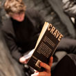
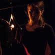
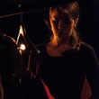
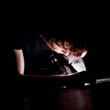
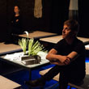
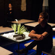

![[Play without a Title]](./collage/lorca1.jpg "Play without a Title")
![[Diary of a Madman]](./collage/madman3.jpg "Diary of a Madman")
![[Discords]](./collage/discords1.jpg "Discords")

![[Play without a Title]](./collage/lorca3.jpg "Play without a Title")
![[Diary of a Madman]](./collage/madman5.jpg "Diary of a Madman")
![[Stasis: Beckett Shorts]](./collage/rough2.jpg "Stasis: Beckett Shorts
(Rough for Theatre II)") 

![[Discords]](./collage/discords3.jpg "Discords")

![[Persephone]](./collage/persephone4.jpg "Persephone")
![[Play without a Title]](./collage/lorca4.jpg "Play without a Title")
![[Play without a Title]](./collage/lorca2.jpg "Play without a Title")
![[Echo & Narcissus]](./collage/echo2.jpg "Echo & Narcissus") 

![[Stasis: Beckett Shorts]](./collage/rough1.jpg "Stasis: Beckett Shorts
(Rough for Theatre II)")
![[Play without a Title]](./collage/lorca5.jpg "Play without a Title")
![[Phaedra's Love]](./collage/phaedra4.jpg "Phaedra's Love")
![[Head]](./collage/head1.jpg "Head")
![[Phaedra's Love]](./collage/phaedra2.jpg "Phaedra's Love")
![[Stasis: Beckett Shorts]](./collage/ohio1.jpg "Stasis: Beckett Shorts
(Ohio Impromptu)")
![[Discords]](./collage/discords2.jpg "Discords")
![[Diary of a Madman]](./collage/madman4.jpg "Diary of a Madman")
![[Crave]](./collage/crave2.jpg "Crave")
Fail Better Productions is a collective of theatre artists that strive for intensity and detail in textually rich and visually arresting performance.
During this period we developed new projects in Bristol, Coventry, Dublin and Oxford.
This website documents our work 2001-12.
We opened up our archive to the IATL Student Ensemble and invited audience members into a different kind of theatre museum on Saturday 21st April 2012.
Video documentation available here.
We performed a special double-bill of Diary of a Madman and Discords to celebrate our tenth anniversary at Warwick Arts Centre.
Please watch this film about our Residency at The CAPITAL Centre:
Watch it nowWe honoured the 20th anniversary of the author's death through a series of events in our 2009 season. Stasis (Rough for Theatre II and Ohio Impromptu by Samuel Beckett) was revived at Oxford Playhouse with performances last month.
At Warwick University, our student ensemble engaged with the BeckettLab practice-as-research project and the academic symposium Beckett and the Brain.
The New Statesman have published the article Translating Lorca discussing our production of Play Without a Title alongside the Belgrade's The House of Bernarda Alba.